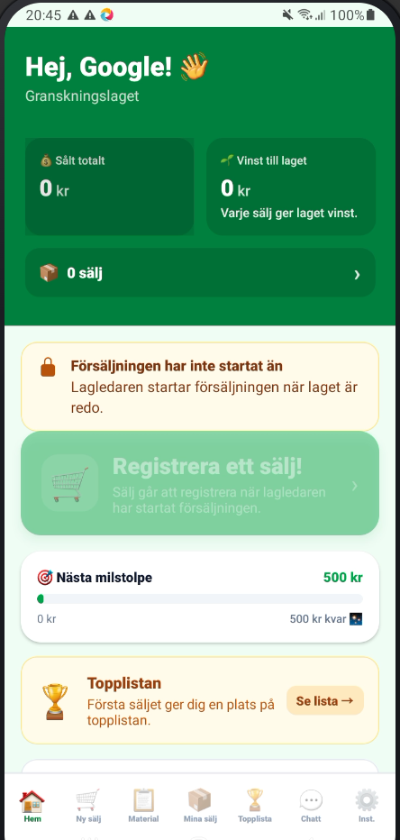
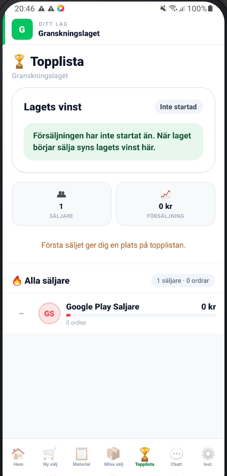
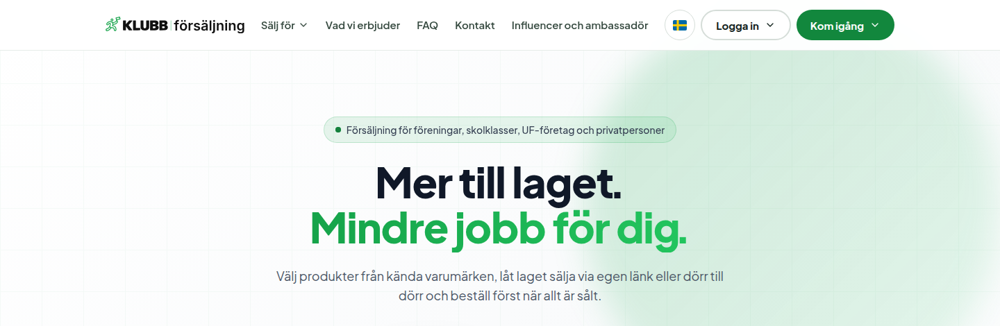
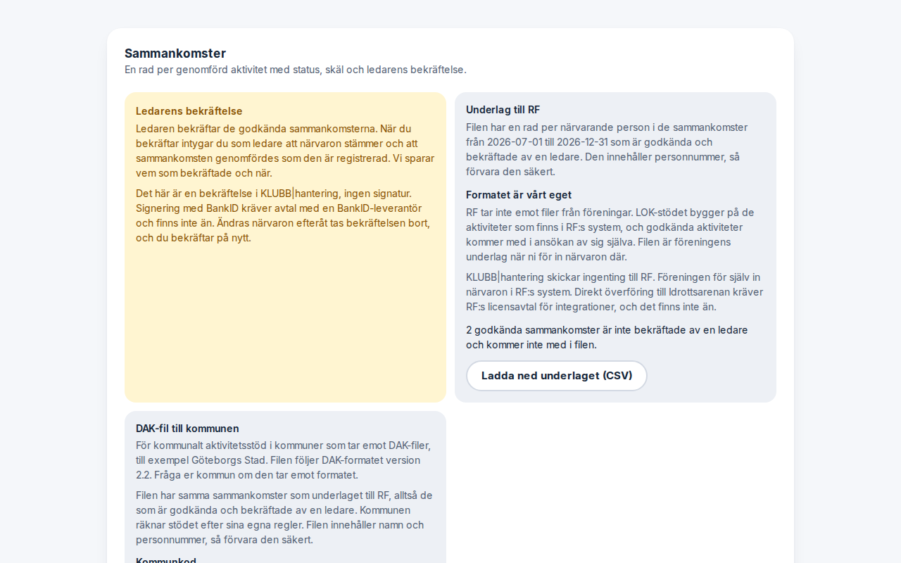
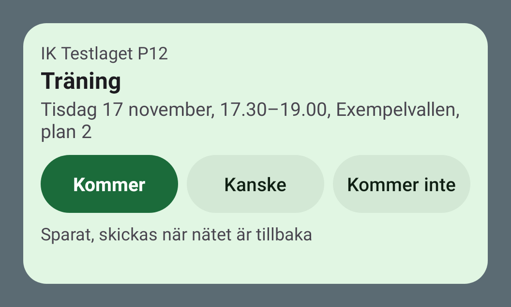

Milstolpe 1, teknikval
En kodbas i stället för två appar
Jag valde React Native med Expo framför Swift och Kotlin, så att appen kunde dela server, typer och regler med webben. Priset är att jag kommer längre från plattformarna.
Portfolio
Jag bygger appar och webbtjänster för föreningslivet. Här finns fyra projekt, från app och webb i drift till mitt examensarbete i Kotlin.
Jag har arbetat ensam, med AI-kodagenter som har skrivit det mesta av koden medan jag har stått för kraven, arkitekturen, granskningen och proven på riktiga telefoner. I Klubbförsäljning satte jag upp databasens grund, tabellerna och behörigheterna (Row Level Security), för hand, och vägledning har jag fått från API-dokumentationen, Stack Overflow och AI-verktygen.


Kompetenser
Projekt 1 Slutfört
React Native · Expo · TypeScript · EAS
Lag, föreningar och skolklasser säljer varor för att få in pengar till kassan. I appen registrerar säljaren sina order och följer topplistan, och lagledaren lägger lagets beställning. Rättelser går ut som OTA, utan butikernas granskning.



Milstolpe 1, teknikval
Jag valde React Native med Expo framför Swift och Kotlin, så att appen kunde dela server, typer och regler med webben. Priset är att jag kommer längre från plattformarna.
Milstolpe 2, ett misstag
Uppgraderingen till Expo SDK 58 ändrade en flikinställning, så att Byt lag slutade fungera. Jag rättade det med en OTA samma kväll, och sedan dess startas varje version på riktig iPhone och Android innan den skickas in.
Projekt 2 Slutfört
React · TypeScript · Vite · Supabase · Edge Functions i Deno
Webben är den publika webbplatsen, lagledarens panel, säljarnas vyer och kassan. Där finns också KLUBB|pay, där kundernas Swish går till föreningens eget konto, och ett CRM för företaget. Webben finns på svenska, engelska och danska.



Milstolpe 1, arkitektur
I oktober hittade jag att en beställning kunde markeras som lagd utan bekräftad betalning. Nu bekräftar leverantörens egna händelser betalningen, och ett jobb stämmer av var femtonde minut.
Milstolpe 2, design
Knappen i kassan hade 2,7 till 3,3:1 i kontrast, och WCAG kräver 4,5:1. Jag valde en mörkare grön som ger 5,0:1.
Projekt 3 Pågående
Next.js · tRPC · Expo · Drizzle · Supabase
Klubbhantering är ett system för idrottsföreningar: medlemsregister, lag, kallelser med svar i realtid, närvaro, fakturor och föreningens egen hemsida. Ledaren bekräftar närvaron, och föreningen laddar ner underlaget för LOK-stöd. Appen provas på riktiga Android-telefoner och är inte inskickad än.



Milstolpe 1, design
Jag delade upp funktionerna efter kassören, ledaren, föräldern och styrelsen. Menyn är byggd med details och gjorde sidan bara 1 kB tyngre.
Milstolpe 2, teknikval
Samma ändring i expo-router 58 som gav felet i version 1.0.4 gjorde att kugghjulet på Hem inte svarade. Jag flyttade Inställningar till rotnavigeringen, eftersom en dold flik ger fel bakåtsteg.
Projekt 4 Slutfört
Kotlin · Jetpack Compose · Room · WorkManager · Glance
Nästa pass är mitt examensarbete, en Android-app där spelare och föräldrar svarar på lagets träningar, även utan nät. Svaret sparas först i telefonen och skickas när nätet är tillbaka, och en widget visar nästa pass på hemskärmen. Appen är provad med 37 prov i JVM:en, och provet på riktig telefon görs före redovisningen den 24 november.


Milstolpe 1, teknikval
Alternativet var en egen kötabell med en rad per tryck. Jag valde en rad per pass som skrivs över, så att bara det senaste svaret skickas.
Milstolpe 2, ett misstag
Det syntes i den första bilden av widgeten, fast proven var gröna. Rättelsen blev två storlekar, och proven tar nu en bild av båda.
Klart är det först när jag har sett beviset på en riktig skärm, och varje misstag ska lämna en skriven regel efter sig.
klubbforsaljning.se
App Store och Google Play